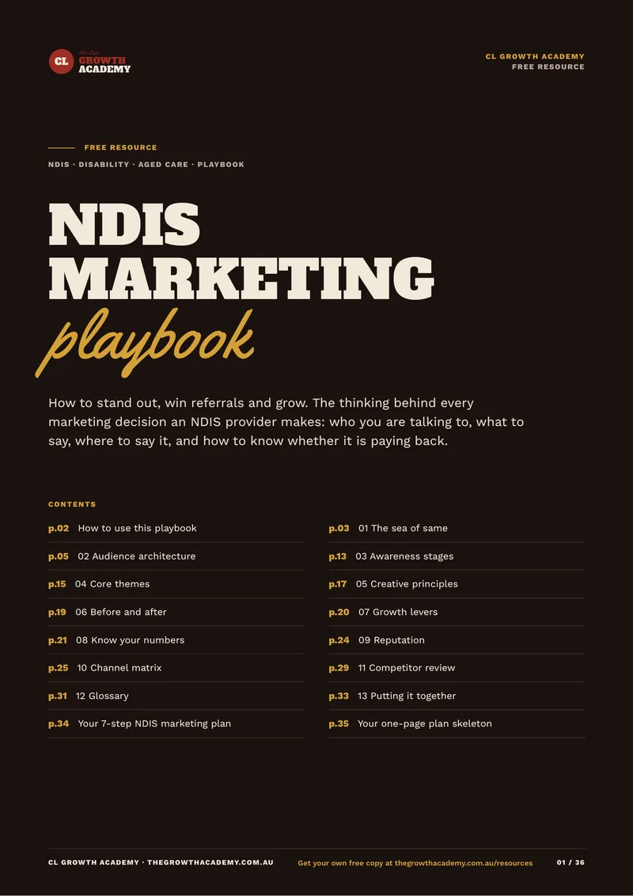

NDIS Marketing Plan Playbook: Stand Out, Win Referrals, Know Your Numbers
The NDIS Marketing Playbook is a free 36-page strategy guide for NDIS, disability and aged care providers. It covers how to stand out from generic sector copy, who you are writing for, how referrals grow, which channels fit, and how to work out what a Participant is worth before you set a marketing budget.

How do I write an NDIS marketing plan?
Short answer: Build it in 7 steps. Cut the clichés, name your audiences, work out what a Participant is worth, pick channels by intent, write a referral plan, set a 12-hour response standard, then brief every campaign and review the numbers monthly and quarterly. Plan campaign by campaign, because a fixed 12-month plan goes out of date fast in this sector.
- Step 1. Cut the clichés. Run the cliché kill list over your homepage, one service page and your last five social posts, and swap each phrase for a fact only you can state.
- Step 2. Name your audiences. Decide whether each message is for the User or the Chooser, then name the person, role and institution: a support coordinator, a discharge planner, an OT, a family in crisis.
- Step 3. Know your numbers. Work out lifetime value (LTV) profit for each service line, then set your thriving cost per acquisition. A working target we use is 5 to 10% of LTV profit.
- Step 4. Pick channels by intent. Match each channel to what the reader is doing when they see it, using the channel table below.
- Step 5. Write a referral plan. Named accounts, a set outreach rhythm and a record of how each relationship is going. Publish clear eligibility criteria so referrers do not waste time.
- Step 6. Set your response standard with the 12-hour rule: a named person contacts every enquiry within 12 hours.
- Step 7. Brief every campaign, then review on a rhythm. Run the eleven steps and the one-page brief for each campaign. Track your KPIs every month, and set aside two hours each quarter for a competitor review and a check of your condition and intake pages.
Is there an NDIS marketing plan template?
Yes. Copy this skeleton into a document and fill in each line with your own figures. The PDF has the 7-step plan and this skeleton as their own pages, plus the full one-page campaign brief, the channel CPA worksheet and the competitor review worksheet.
| Plan line | Your answer |
|---|---|
| The audience: person, role and institution | |
| Their awareness stage and the trigger event | |
| Motivator mix: away-from and toward | |
| Framework and persona | |
| Proof points: numbers, timelines, named processes | |
| Channel and the next step for the reader | |
| LTV profit for this service line | |
| Thriving CPA target (5 to 10% of LTV profit) | |
| Last year's spend and new Participants by channel | |
| Named person who replies within 12 hours | |
| The three numbers you track monthly | |
| Date of the next quarterly competitor review |
If you track nothing today, start with three numbers:
- New enquiries by source.
- Time from enquiry to start date.
- New Participants by channel.
Which phrases should NDIS providers cut from their marketing? Use the cliché kill list
The cliché kill list is every phrase a competitor could paste onto their own website without changing a word. These turn up so often that families and referrers no longer register them:
- Person-centred care
- Choice and control
- Holistic support
- Tailored support
- We are passionate about...
- Innovative care
- We don't take a one-size-fits-all approach
- Quality care
- Life-changing support
- A dedicated team
- Your care, your way
As I put it in a conversation earlier this year: "Generic language, generic copy, generic everything. Just doesn't cut it anymore."
The fix is to swap each cliché for a fact only you can state:
- Generic: "Excited to announce a new SIL vacancy in a beautiful location."
- Specific: "Immediate capacity in (your suburb): RN-led oversight, 24-hour intake response, two places left."
The playbook's ten-minute exercise: open your homepage, one service page and your last five social posts, highlight every phrase on the list, and write the specific fact underneath each one. Where you have no fact to swap in, that gap is your next operational job.
Who should an NDIS marketing plan be written for?
Start with one question: is this message for the person receiving the support (the User), or for the person making or steering the decision (the Chooser)? Then name the audience more precisely than "families" or "referrers".
| Audience | Main trigger | Main fear | Best channel |
|---|---|---|---|
| Support Coordinator | New high-acuity client, placement breakdown | A bad referral that reflects on them | LinkedIn organic, direct email, peer networks, events |
| Specialist Support Coordinator | A complex case other providers will not take | Clinical risk and professional exposure | LinkedIn, direct outreach, clinical events |
| Discharge planner | Participant ready to discharge, no placement | Client leaving hospital without enough support | Direct outreach, hospital visits, existing relationships |
| Occupational therapist | Provider failing to implement OT protocols | Their clinical prescription being ignored | Direct outreach, allied health networks, LinkedIn |
| Crisis enquirer (family) | Placement breakdown or sudden change in need | Making the wrong choice again | Google, Facebook Groups, AI tools, word of mouth |
| Long-journey family | Provider ending, plan review, needs changing | Another provider who overpromised | Google, peer recommendations, forums, AI tools |
| Participant (self-directed) | New funding, a peer recommendation | Being treated as a case | Instagram, Facebook, Google, word of mouth |
The playbook gives each of these a full profile: the questions they are asking, what motivates them, what sets off the search, how they find providers and what they need to see from you.
How do referrals fit into an NDIS marketing strategy?
For complex and high-acuity care, referrals are the main engine. Service excellence earns referrer trust, trust makes outreach welcome, outreach produces referrals, and each referral is a chance to deliver again. The playbook calls this being a pleasure to refer to:
- Publish clear eligibility criteria so referrers do not waste time.
- Respond fast, through a documented, timed intake process.
- Send updates before anyone asks for them.
- Move from waiting for word of mouth to a written referral plan: named accounts, a set outreach rhythm and a record of each relationship.
If you want help building that plan, see how I run NDIS referral marketing.
How fast should an NDIS provider reply to an enquiry? Use the 12-hour rule
Short answer: Contact every enquiry within 12 hours. That is the 12-hour rule, our working standard. Families often enquire in a moment of crisis, and an enquiry left longer is, for practical purposes, lost. Marketing brings in the enquiry, and your intake process has to be built to catch it, so track your own response times against it.
How much should an NDIS provider spend to win a new Participant? Start with the magic door question
Work it out from what a Participant is worth to you. I call it the magic door question, and I put it to clients like this: "If I had a magic door with endless customers behind me. How many dollars would you part with each time I bring a new customer through?" Three numbers answer it.
Lifetime value (LTV) is the total revenue or profit a Participant brings over the whole time they are with you:
- LTV revenue = hours per week × hourly rate × weeks serviced per year × years retained
- Illustrative example: 5 hours × $70 × 48 weeks × 3 years = $50,400
- LTV profit = hours per week × profit per hour × weeks serviced per year × years retained
- Illustrative example: 5 hours × $20 profit × 48 weeks × 3 years = $14,400
The $70 hourly rate and $20 profit per hour are illustrative round figures to show the method. Use your own rates and margins, and check the current NDIS Pricing Arrangements and Price Limits for the support items you deliver. Count 48 to 50 weeks, not 52, to allow for public holidays, leave and service gaps.
Cost per acquisition (CPA) is your total marketing spend (ads, agency fees, business development wages) divided by the new Participants won in the same period. Set it against LTV profit to see which zone you are in:
| Zone | What it means | Illustrative, from $14,400 LTV profit |
|---|---|---|
| Thriving | Growing with healthy margins. A working target we use: 5 to 10% of LTV profit | $720 to $1,440 |
| Surviving | Marketing breaks even. The ceiling, never the target | Up to $14,400 |
| Dying | Every Participant won costs more than they return | Above $14,400 |
A lower CPA is not always better. Work out LTV per service line, because a complex SIL Participant can be worth much more than a lower-acuity one.
Which channels belong in an NDIS marketing plan?
The ones that match what your reader is doing when they see the message. The playbook's channel matrix, with the role of each channel and what to watch:
| Channel | Role | Main audience | What to watch |
|---|---|---|---|
| Google Ads | Direct conversion, filling vacancies | Families, Participants and Support Coordinators actively searching | Ad spend against enquiries, and the negative keyword list |
| Meta and Facebook | Awareness, nurture, enquiries | Families, primary carers, community members | Ad frequency, and how many enquiries become Participants |
| LinkedIn organic | Referral relationships, showing expertise | Support Coordinators, OTs, discharge planners, allied health | Referral partners contacted and Support Coordinator referrals each month |
| LinkedIn paid | Awareness and credibility with referrers | Named job titles at target institutions | Whether the exact job titles and institutions you chose are seeing it |
| SEO and AEO | Long-term visibility, authority, AI citations | Anyone searching by condition or location, and AI tools that suggest providers | Website visitors, top three traffic sources, and whether AI tools mention you |
| Online communities | Trust signals, peer credibility | Families, Participants and peers in Facebook Groups, Reddit and forums | What is being said about you there |
| Nurture, relationship upkeep, capacity updates | Segmented referrer and family lists | Clicks and replies over opens | |
| Website | Conversion hub, referral pathway, proof | Everyone, especially after a referral | Enquiry conversion rate |
| Events and networking | Starting relationships, authority | Professional referrers, allied health, community partners | New enquiries by source after each event |
The playbook covers how to run each channel, how families and referrers use AI tools at each stage, and the role of Facebook Groups, Reddit and forums.
Who is the playbook for?
Owners, executives and marketing staff at NDIS, disability and aged care providers, and anyone who writes or briefs marketing for them. Read it once end to end with whoever runs your marketing, in-house or outside, and keep the glossary handy for anyone new to the sector.
Get the NDIS Marketing Playbook free
You get the full 36-page PDF, plus every other resource in the library.
FAQ
Is there an NDIS marketing plan template in the playbook?
Yes. Section 13 has a one-page campaign brief, section 08 has a channel CPA worksheet, and section 11 has a competitor review worksheet. The skeleton on this page pulls the main lines together. Fill in all of them with your own figures.
Are the dollar figures NDIS prices?
No. The $70 hourly rate and $20 profit per hour are illustrative round figures to show the method. Use your own rates and check the current NDIS Pricing Arrangements and Price Limits.
How often should I review my NDIS marketing plan?
Track your KPIs every month and set aside two hours each quarter for a competitor review and a check of your condition and intake pages. Run the eleven steps for every new campaign.
How is this different from the growth audit checklist?
The Growth Audit Checklist finds the gaps in your marketing, sales and technology. The playbook is the thinking behind each marketing decision once you know where to start.
Is it only for NDIS providers?
The examples are NDIS and disability. The sections on audiences, referrals and numbers carry over to aged care providers.
Sources
- NDIA, Pricing arrangements (NDIS Pricing Arrangements and Price Limits), https://www.ndis.gov.au/providers/pricing-and-payments/pricing/pricing-arrangements (opens in a new tab), checked 15 November 2026. The page sets the maximum prices for NDIS supports; the playbook's dollar figures are illustrative, not price limits.
- NDIA, NDIS logo guidelines, https://www.ndis.gov.au/contact/feedback-and-enquiries/ndis-logo-guidelines (opens in a new tab), checked 15 November 2026. Basis for "no NDIS endorsement claims": no one may use the NDIS logo without written consent from the NDIA, and only registered providers may use the "I/we heart NDIS" and "I/we support NDIS" logos with the "Registered Provider" tagline.
- NDIS Quality and Safeguards Commission, NDIS Code of Conduct, https://www.ndiscommission.gov.au/rules-and-standards/ndis-code-conduct (opens in a new tab), checked 15 November 2026. Basis for respecting privacy (written consent for photos and stories) and acting with integrity, honesty and transparency (every number true).
Want help putting it to work?
Book a free growth audit and I'll go through your business with you and pick the first three moves, then you decide whether you want help running them. If you want it run for you, see how I approach NDIS marketing and managed growth.